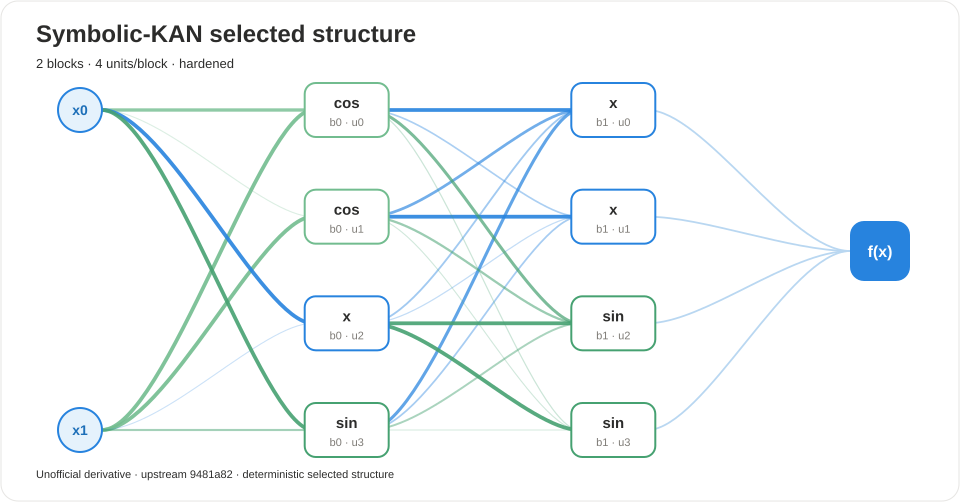

UNOFFICIAL · ATTRIBUTED · AUDITABLE
Symbolic-KAN audit report
Deterministic structure, native candidate evidence, and export metadata.
2blocks
8active units
yeshardened
Selected structure

Expression
(((1.84245*(cos(1.87387*(-0.146034*(x_0) + -0.174367*(x_1) + -0.00824428) + 0)) + -0.00354667)) + (1.91351*(1.91351*(-0.196486*((1.84245*(cos(1.87387*(-0.146034*(x_0) + -0.174367*(x_1) + -0.00824428) + 0)) + -0.00354667)) + -0.123332*((1.96384*(cos(2.05106*(-0.0515233*(x_0) + -1.18051*(x_1) + 0.0313668) + 0)) + -0.150698)) + -0.0613512*((1.78331*(1.78331*(-0.527122*(x_0) + -0.0177246*(x_1) + -0.0455767) + 0) + -0.0802562)) + -0.147104*((1.95005*(sin(1.95824*(0.262891*(x_0) + 0.105123*(x_1) + -0.254074) + 0)) + -0.146986)) + 0.073953) + 0) + -0.0796828)) + (((1.96384*(cos(2.05106*(-0.0515233*(x_0) + -1.18051*(x_1) + 0.0313668) + 0)) + -0.150698)) + (1.95587*(1.95587*(0.0832179*((1.84245*(cos(1.87387*(-0.146034*(x_0) + -0.174367*(x_1) + -0.00824428) + 0)) + -0.00354667)) + -0.340546*((1.96384*(cos(2.05106*(-0.0515233*(x_0) + -1.18051*(x_1) + 0.0313668) + 0)) + -0.150698)) + 0.0295921*((1.78331*(1.78331*(-0.527122*(x_0) + -0.0177246*(x_1) + -0.0455767) + 0) + -0.0802562)) + -0.0936306*((1.95005*(sin(1.95824*(0.262891*(x_0) + 0.105123*(x_1) + -0.254074) + 0)) + -0.146986)) + 0.038952) + 0) + -0.128155)) + (((1.78331*(1.78331*(-0.527122*(x_0) + -0.0177246*(x_1) + -0.0455767) + 0) + -0.0802562)) + (1.84586*(sin(1.90865*(0.197751*((1.84245*(cos(1.87387*(-0.146034*(x_0) + -0.174367*(x_1) + -0.00824428) + 0)) + -0.00354667)) + 0.126801*((1.96384*(cos(2.05106*(-0.0515233*(x_0) + -1.18051*(x_1) + 0.0313668) + 0)) + -0.150698)) + -0.271696*((1.78331*(1.78331*(-0.527122*(x_0) + -0.0177246*(x_1) + -0.0455767) + 0) + -0.0802562)) + -0.0948753*((1.95005*(sin(1.95824*(0.262891*(x_0) + 0.105123*(x_1) + -0.254074) + 0)) + -0.146986)) + -0.0415603) + 0)) + -0.11165)) + (((1.95005*(sin(1.95824*(0.262891*(x_0) + 0.105123*(x_1) + -0.254074) + 0)) + -0.146986)) + (2.15874*(sin(2.09354*(-0.06876*((1.84245*(cos(1.87387*(-0.146034*(x_0) + -0.174367*(x_1) + -0.00824428) + 0)) + -0.00354667)) + -0.0307823*((1.96384*(cos(2.05106*(-0.0515233*(x_0) + -1.18051*(x_1) + 0.0313668) + 0)) + -0.150698)) + -0.822564*((1.78331*(1.78331*(-0.527122*(x_0) + -0.0177246*(x_1) + -0.0455767) + 0) + -0.0802562)) + -0.00272173*((1.95005*(sin(1.95824*(0.262891*(x_0) + 0.105123*(x_1) + -0.254074) + 0)) + -0.146986)) + -0.0792901) + 0)) + -0.11274))
Selected units
| Block | Unit | Primitive | Edge | Status |
|---|---|---|---|---|
| 0 | 0 | cos | 1 | active |
| 0 | 1 | cos | 1 | active |
| 0 | 2 | x | 0 | active |
| 0 | 3 | sin | 1 | active |
| 1 | 0 | x | 0 | active |
| 1 | 1 | x | 0 | active |
| 1 | 2 | sin | 0 | active |
| 1 | 3 | sin | 1 | active |
Metadata
{
"profile": "tutorial",
"seed": 42
}Scientific-integrity boundary. This report was produced by an unofficial derivative package. It is not an upstream paper result and does not imply endorsement by the original authors.